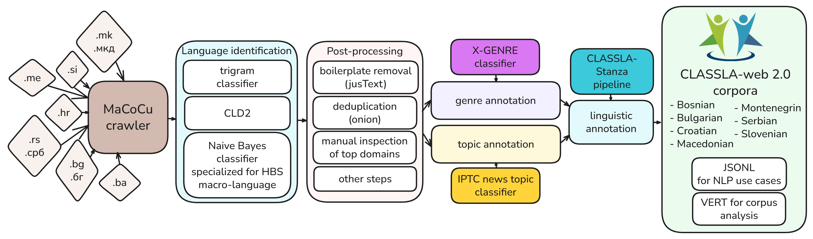

CLASSLA-web: South Slavic web corpora for linguistic research and language technology development
CLASSLA-web is a collection of comparable, large-scale web corpora of all seven South Slavic languages: Slovenian, Croatian, Bosnian, Montenegrin, Serbian, Macedonian, and Bulgarian.
The corpora are built from national top-level domain web crawls, cleaned and curated, linguistically annotated with the CLASSLA-Stanza pipeline, and enriched with document-level metadata, including genre labels and topic labels.
Two major releases are available: CLASSLA-web 1.0 (collected in 2021–2022; 11B words and 26M texts) and CLASSLA-web 2.0 (collected in 2024; 17B words and 38M texts). Roughly 80% of texts in version 2.0 are new compared to version 1.0.
The corpora are distributed via the CLARIN.SI repository in download-ready formats and accessible through CLARIN.SI concordancers.

CLASSLA-web 2.0 (Crawl 2024)
Version 2.0 represents the second iteration of the CLASSLA-web collection, created using the same comparable crawling, filtering, and annotation pipeline as version 1.0. All corpora are distributed via a single CLARIN.SI repository entry, while each language is available through its own concordancer entry.
-
Bosnian: CLASSLA-web.bs 2.0Texts from the
.badomain and connected general domains. -
Bulgarian: CLASSLA-web.bg 2.0Texts from the
.bgand.бгdomains and connected general domains. -
Croatian: CLASSLA-web.hr 2.0Texts from the
.hrdomain and connected general domains. -
Macedonian: CLASSLA-web.mk 2.0Texts from the
.mkand.мкдdomains and connected general domains. -
Montenegrin: CLASSLA-web.cnr 2.0Texts from the
.medomain and connected general domains. -
Serbian: CLASSLA-web.sr 2.0Texts from the
.rsand.србdomains and connected general domains. -
Slovenian: CLASSLA-web.sl 2.0Texts from the
.sidomain and connected general domains.
CLASSLA-web 1.0 (Crawl 2021–2022)
Version 1.0 is the first release of the seven-language CLASSLA-web collection.
-
Bosnian: CLASSLA-web.bs 1.0Texts from the
.badomain and connected general domains. -
Bulgarian: CLASSLA-web.bg 1.0Texts from the
.bgand.бгdomains and connected general domains. -
Croatian: CLASSLA-web.hr 1.0Texts from the
.hrdomain and connected general domains. -
Macedonian: CLASSLA-web.mk 1.0Texts from the
.mkand.мкдdomains and connected general domains. -
Montenegrin: CLASSLA-web.cnr 1.0Texts from the
.medomain and connected general domains.Serbian: CLASSLA-web.sr 1.0Texts from the.rsand.србdomains and connected general domains.Slovenian: CLASSLA-web.sl 1.0Texts from the.sidomain and connected general domains.Tutorials
Practical guides for querying CLASSLA-web and for using the models involved in the corpora enrichment.
-
Quick concordancer tutorial (blog post)A fast walkthrough of how to query the corpora and explore results in the CLARIN.SI concordancer.
-
CLASSLA-Express workshop seriesWorkshops on using CLASSLA web corpora in language research. The series continues next year with new stops and updated teaching materials.
-
Code for Automatic AnnotationThe Python library for linguistic annotation, and tutorials in Jupyter Notebooks on the use of the genre and topic classifiers on your own data.
How to Cite the CLASSLA-web Corpora
Please always cite both: (1) the paper describing the corresponding CLASSLA-web version, and (2) the specific corpus you used (the CLARIN.SI repository item for the correct language and version).
(1) Cite the paperThe paper presenting the CLASSLA-web 1.0 corpora:Ljubešić, Nikola, and Taja Kuzman. "CLASSLA-web: Comparable Web Corpora of South Slavic Languages Enriched with Linguistic and Genre Annotation." Proceedings of the 2024 Joint International Conference on Computational Linguistics, Language Resources and Evaluation (LREC-COLING 2024). 2024.@inproceedings{ljubesic-kuzman-2024-classla, title = {{CLASSLA}-web: Comparable Web Corpora of {S}outh {S}lavic Languages Enriched with Linguistic and Genre Annotation}, author = {Ljube{\v{s}}i{\'c}, Nikola and Kuzman, Taja}, booktitle = {Proceedings of the 2024 Joint International Conference on Computational Linguistics, Language Resources and Evaluation (LREC-COLING 2024)}, year = {2024}, pages = {3271--3282}, url = {https://aclanthology.org/2024.lrec-main.291/} }The paper presenting the CLASSLA-web 2.0 corpora:Kuzman Pungeršek, Taja, and Peter Rupnik, and Vít Suchomel, and Nikola Ljubešić. "The Growing Gains and Pains of Iterative Web Corpora Crawling: Insights from South Slavic CLASSLA-web 2.0 Corpora." In submission.
(2) Cite the corpus (repository item)Use the BibTeX entry matching the exact corpus you queried or downloaded. If you prefer, you can also use the repository’s built-in Cite function and export BibTeX directly from each CLARIN.SI repository item page.
An example:@misc{classlaweb_sl_1_0, title = {Slovenian web corpus CLASSLA-web.sl 1.0}, author = {Ljube{\v{s}}i{\'c}, Nikola and Rupnik, Peter and Kuzman, Taja}, year = {2024}, howpublished = {\url{https://hdl.handle.net/11356/1882}}, note = {CLARIN.SI repository} }How CLASSLA-web were Constructed
The corpora are built through large-scale national top-level-domain web crawling, followed by cleaning, structuring, and automatic enrichment. All CLASSLA-web versions share a common methodological backbone, enabling direct comparison across crawling iterations.
Pipeline overviewKey steps include national TLD crawling, language identification (with specialized HBS disambiguation), boilerplate and duplicate removal, manual inspection of top domains, automatic genre and topic annotation, and linguistic annotation with CLASSLA-Stanza.Video presentation (CLASSLA-web 1.0)This recorded presentation introduces the original CLASSLA-web 1.0 corpora and the overall crawling and annotation methodology, which also forms the basis of version 2.0.What is new in CLASSLA-web 2.0?Compared to CLASSLA-web 1.0 (crawled in 2021–2022), the 2.0 release (crawled in 2024) introduces several improvements:- Substantially larger corpora: 17 billion words and 38 million texts across seven languages (compared to 11 billion words and 26 million texts in version 1.0).
- Very low overlap with version 1.0: on average, only about 20% of texts are shared, showing rapid turnover of web content.
- Improved near-duplicate detection through masking of numbers, punctuation, and links.
- Expanded manual inspection of high-frequency domains for all languages, addressing the rise of automatically generated and low-quality content.
- A new document-level annotation layer: automatic topic labels (IPTC News Topics), complementing existing genre annotation.
Corpus attributesid– unique document identifier, e.g.CLASSLA-web.2.0.sr.11title– document title, if availabletext– full document text; paragraphs are separated by newline characters (\n)url– original document URLdomain– extracted domain name (e.g.11.si)tld– top-level domain (e.g.si,hr)lang– language code (sl,hr,sr,bs,cnr,mk,bg; hidden in the concordancer)script– Latin or Cyrillic (used in Bosnian/Croatian/Serbian/Montenegrin corpora)crawl_year– year of the web crawl (hidden in the concordancer)genre– automatically predicted document genre using the X-GENRE classifier; one of 10 labels:
Information/Explanation,News,Instruction,Opinion/Argumentation,Forum,Prose/Lyrical,Legal,Promotion,Other,Mix(whereMixindicates classifier confidence below 0.8)topic– automatically predicted IPTC news topic (version 2.0); one of 18 labels:
Politics,Economy, Business and Finance,Society,Education,Science and Technology,Health,Sport,Arts, Culture, Entertainment and Media,Crime, Law and Justice,Environment,Conflict, War and Peace,Weather,Human Interest,Lifestyle and Leisure,Labour,Religion,Disaster, Accident and Emergency Incident,Mix(whereMixindicates classifier confidence below 0.6)
Contacts
For questions about the corpora or collaboration, contact the authors below.
-
Taja Kuzman PungeršekEmail: taja.kuzman@ijs.si
-
Nikola LjubešićEmail: nikola.ljubesic@ijs.si
-
CLASSLA HelpdeskEmail: helpdesk.classla@clarin.si
-
CLARIN.SI HelpdeskEmail: info@clarin.si